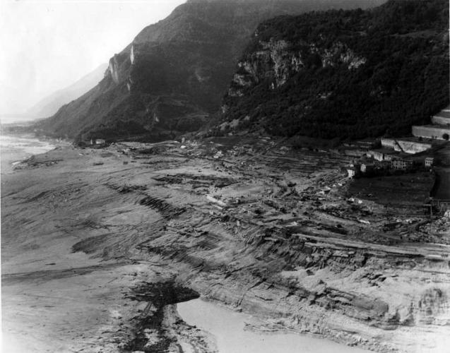

The Vaiont Dam Disaster
The Night of October 9, 1963: In the Venetian Alps of Italy, the Vaiont Dam stood as a marvel of modern engineering, the tallest thin-arch dam in the world. However, the mountain it was built against, Monte Toc, was geologically unstable. As the reservoir was filled, the water pressure began to lubricate the ancient clay layers within the mountain. Engineers noticed small landslides and "creeping" earth, but the strategy was to continue filling the basin to meet energy demands, believing they could control the mountain's movement by adjusting water levels.

At 10:39 PM, the strategy of "controlled risk" failed catastrophically. A massive slab of Monte Toc, over a mile long, detached and slid into the reservoir at 60 miles per hour. This was not a dam breach; the dam itself remained perfectly intact. Instead, the landslide displaced 260 million cubic meters of water, creating a 800 foot high "megatsunami." The wall of water overtopped the dam, surged into the valley below, and erased the town of Longarone and several villages in less than four minutes. Approximately 2,000 people were killed instantly, most of whom were in their beds.
From Corporate Arrogance to Legal Precedent: The immediate strategy by the electric company (SADE) and the government was one of Technical Denial. Before the disaster, journalists who warned of the mountain's instability were sued for "spreading false news" to protect the project's reputation.
Key Facts
Date: October 9, 1963
Location: Venetian Alps, Italy (Longarone and surrounding villages)
Casualties: Approximately 2,000 deaths
Cause: Geological Negligence (Landslide into the reservoir creating an 800-foot megatsunami that overtopped the dam)
The Judicial Strategy: The disaster led to one of the most complex legal battles in Italian history. It was a strategic shift in how "Natural Disasters" were defined in court. Prosecutors proved that the event was a "predicted disaster," moving the needle from an "Act of God" to "Culpable Negligence."
The Engineering Goal: The tragedy forced a global strategy shift in dam construction. It proved that the structural integrity of a dam is irrelevant if the surrounding geology is not secured. This led to the mandatory use of Piezometers and advanced seismic monitoring in all large scale reservoir projects worldwide.
The Vaiont Dam is a chilling lesson in "Scientific Hubris." It teaches us that nature cannot always be managed or "timed" by human schedules. The strategy of silencing whistleblowers and prioritizing industrial output over geological reality resulted in a tragedy that was entirely preventable.